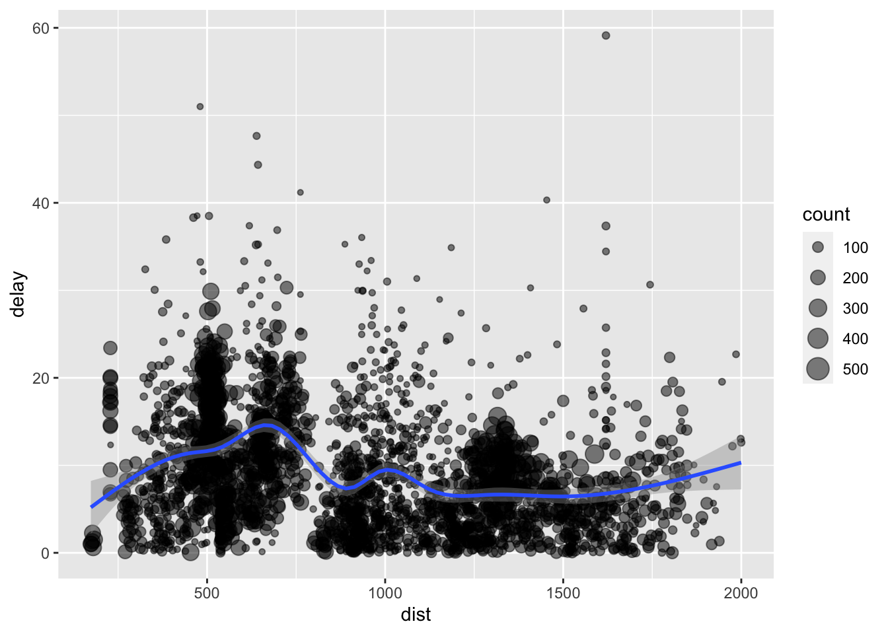

把前两天的两篇文章合并，解决方法：名字还是不能太长，在content目录下新建test目录，把它放在content目录下的test目录，不放在post目录，我的test目录只有两篇文章
1.1、选择行filter()
安装nycflights13包，该软件包中的飞机航班数据将用于本文中dplyr包各个函数的演示
函数tibble::as_tibble()将过长过大的数据集转换为显示更友好的tbl_df 类型:
# A tibble: 6 × 19
year month day dep_time sched_dep…¹ dep_d…² arr_t…³ sched…⁴ arr_d…⁵ carrier
<int> <int> <int> <int> <int> <dbl> <int> <int> <dbl> <chr>
1 2013 1 1 517 515 2 830 819 11 UA
2 2013 1 1 533 529 4 850 830 20 UA
3 2013 1 1 542 540 2 923 850 33 AA
4 2013 1 1 544 545 -1 1004 1022 -18 B6
5 2013 1 1 554 600 -6 812 837 -25 DL
6 2013 1 1 554 558 -4 740 728 12 UA
# … with 9 more variables: flight <int>, tailnum <chr>, origin <chr>,
# dest <chr>, air_time <dbl>, distance <dbl>, hour <dbl>, minute <dbl>,
# time_hour <dttm>, and abbreviated variable names ¹sched_dep_time,
# ²dep_delay, ³arr_time, ⁴sched_arr_time, ⁵arr_delayShow the code
filter(flights,origin == "JFK",month == 6L) #－ 获取六月份所有从”JFK”机场起飞的航班# A tibble: 9,472 × 19
year month day dep_time sched_de…¹ dep_d…² arr_t…³ sched…⁴ arr_d…⁵ carrier
<int> <int> <int> <int> <int> <dbl> <int> <int> <dbl> <chr>
1 2013 6 1 2 2359 3 341 350 -9 B6
2 2013 6 1 538 545 -7 925 922 3 B6
3 2013 6 1 539 540 -1 832 840 -8 AA
4 2013 6 1 553 600 -7 700 711 -11 EV
5 2013 6 1 554 600 -6 851 908 -17 UA
6 2013 6 1 557 600 -3 934 942 -8 B6
7 2013 6 1 559 600 -1 856 930 -34 UA
8 2013 6 1 606 610 -4 847 906 -19 B6
9 2013 6 1 609 615 -6 759 808 -9 US
10 2013 6 1 615 610 5 837 847 -10 B6
# … with 9,462 more rows, 9 more variables: flight <int>, tailnum <chr>,
# origin <chr>, dest <chr>, air_time <dbl>, distance <dbl>, hour <dbl>,
# minute <dbl>, time_hour <dttm>, and abbreviated variable names
# ¹sched_dep_time, ²dep_delay, ³arr_time, ⁴sched_arr_time, ⁵arr_delayShow the code
slice(flights,1:2) #选取前面的1:2行# A tibble: 2 × 19
year month day dep_time sched_dep…¹ dep_d…² arr_t…³ sched…⁴ arr_d…⁵ carrier
<int> <int> <int> <int> <int> <dbl> <int> <int> <dbl> <chr>
1 2013 1 1 517 515 2 830 819 11 UA
2 2013 1 1 533 529 4 850 830 20 UA
# … with 9 more variables: flight <int>, tailnum <chr>, origin <chr>,
# dest <chr>, air_time <dbl>, distance <dbl>, hour <dbl>, minute <dbl>,
# time_hour <dttm>, and abbreviated variable names ¹sched_dep_time,
# ²dep_delay, ³arr_time, ⁴sched_arr_time, ⁵arr_delayShow the code
sample_n(flights, 4, replace = TRUE)# 随机选取4条数据记录。# A tibble: 4 × 19
year month day dep_time sched_dep…¹ dep_d…² arr_t…³ sched…⁴ arr_d…⁵ carrier
<int> <int> <int> <int> <int> <dbl> <int> <int> <dbl> <chr>
1 2013 7 11 1703 1700 3 1940 2018 -38 DL
2 2013 10 1 822 829 -7 1007 1027 -20 DL
3 2013 5 5 1932 1930 2 2209 2237 -28 UA
4 2013 7 18 1836 1820 16 2145 2141 4 DL
# … with 9 more variables: flight <int>, tailnum <chr>, origin <chr>,
# dest <chr>, air_time <dbl>, distance <dbl>, hour <dbl>, minute <dbl>,
# time_hour <dttm>, and abbreviated variable names ¹sched_dep_time,
# ²dep_delay, ³arr_time, ⁴sched_arr_time, ⁵arr_delay# A tibble: 29 × 19
year month day dep_time sched_de…¹ dep_d…² arr_t…³ sched…⁴ arr_d…⁵ carrier
<int> <int> <int> <int> <int> <dbl> <int> <int> <dbl> <chr>
1 2013 10 30 2400 2359 1 327 337 -10 B6
2 2013 11 27 2400 2359 1 515 445 30 B6
3 2013 12 5 2400 2359 1 427 440 -13 B6
4 2013 12 9 2400 2359 1 432 440 -8 B6
5 2013 12 9 2400 2250 70 59 2356 63 B6
6 2013 12 13 2400 2359 1 432 440 -8 B6
7 2013 12 19 2400 2359 1 434 440 -6 B6
8 2013 12 29 2400 1700 420 302 2025 397 AA
9 2013 2 7 2400 2359 1 432 436 -4 B6
10 2013 2 7 2400 2359 1 443 444 -1 B6
# … with 19 more rows, 9 more variables: flight <int>, tailnum <chr>,
# origin <chr>, dest <chr>, air_time <dbl>, distance <dbl>, hour <dbl>,
# minute <dbl>, time_hour <dttm>, and abbreviated variable names
# ¹sched_dep_time, ²dep_delay, ³arr_time, ⁴sched_arr_time, ⁵arr_delay1.2、选择列 select()
若要对选择的列进行处理用mutate函数，这里只能对列名进行处理.
# A tibble: 6 × 2
dep_time arr_time
<int> <int>
1 517 830
2 533 850
3 542 923
4 544 1004
5 554 812
6 554 740# A tibble: 6 × 7
day dep_time sched_dep_time dep_delay arr_time sched_arr_time arr_delay
<int> <int> <int> <dbl> <int> <int> <dbl>
1 1 517 515 2 830 819 11
2 1 533 529 4 850 830 20
3 1 542 540 2 923 850 33
4 1 544 545 -1 1004 1022 -18
5 1 554 600 -6 812 837 -25
6 1 554 558 -4 740 728 12Show the code
# A tibble: 6 × 8
year month day dep_time sched_dep_time arr_time sched_arr_time flight
<int> <int> <int> <int> <int> <int> <int> <int>
1 2013 1 1 517 515 830 819 1545
2 2013 1 1 533 529 850 830 1714
3 2013 1 1 542 540 923 850 1141
4 2013 1 1 544 545 1004 1022 725
5 2013 1 1 554 600 812 837 461
6 2013 1 1 554 558 740 728 1696Show the code
#选择是字符串的列
ans <- flights %>% head() %>% select(where(function(x)is.character(x) ))
ans# A tibble: 6 × 4
carrier tailnum origin dest
<chr> <chr> <chr> <chr>
1 UA N14228 EWR IAH
2 UA N24211 LGA IAH
3 AA N619AA JFK MIA
4 B6 N804JB JFK BQN
5 DL N668DN LGA ATL
6 UA N39463 EWR ORD 选择数值列并且以某个字符开始的列
Sepal.Length Sepal.Width
1 5.1 3.5
2 4.9 3.0
3 4.7 3.2
4 4.6 3.1
5 5.0 3.6
6 5.4 3.9选择非数值列
Species
1 setosa
2 setosa
3 setosa
4 setosa
5 setosa
6 setosa Species
1 setosa
2 setosa
3 setosa
4 setosa
5 setosa
6 setosa行同时选择——子集
# A tibble: 9,472 × 7
day dep_time sched_dep_time dep_delay arr_time sched_arr_time arr_delay
<int> <int> <int> <dbl> <int> <int> <dbl>
1 1 2 2359 3 341 350 -9
2 1 538 545 -7 925 922 3
3 1 539 540 -1 832 840 -8
4 1 553 600 -7 700 711 -11
5 1 554 600 -6 851 908 -17
6 1 557 600 -3 934 942 -8
7 1 559 600 -1 856 930 -34
8 1 606 610 -4 847 906 -19
9 1 609 615 -6 759 808 -9
10 1 615 610 5 837 847 -10
# … with 9,462 more rows1.3、排序arrange()
# A tibble: 6 × 19
year month day dep_time sched_dep…¹ dep_d…² arr_t…³ sched…⁴ arr_d…⁵ carrier
<int> <int> <int> <int> <int> <dbl> <int> <int> <dbl> <chr>
1 2013 1 2 905 822 43 1313 1045 NA EV
2 2013 1 3 848 850 -2 1149 1113 36 EV
3 2013 1 4 901 850 11 1120 1113 7 EV
4 2013 1 6 843 848 -5 1053 1111 -18 EV
5 2013 1 7 858 850 8 1105 1113 -8 EV
6 2013 1 8 847 850 -3 1116 1113 3 EV
# … with 9 more variables: flight <int>, tailnum <chr>, origin <chr>,
# dest <chr>, air_time <dbl>, distance <dbl>, hour <dbl>, minute <dbl>,
# time_hour <dttm>, and abbreviated variable names ¹sched_dep_time,
# ²dep_delay, ³arr_time, ⁴sched_arr_time, ⁵arr_delay1.4、添加新变量mutate
# A tibble: 6 × 20
year month day dep_time sched_dep…¹ dep_d…² arr_t…³ sched…⁴ arr_d…⁵ carrier
<int> <int> <int> <int> <int> <dbl> <int> <int> <dbl> <chr>
1 2013 1 1 517 515 2 830 819 11 UA
2 2013 1 1 533 529 4 850 830 20 UA
3 2013 1 1 542 540 2 923 850 33 AA
4 2013 1 1 544 545 -1 1004 1022 -18 B6
5 2013 1 1 554 600 -6 812 837 -25 DL
6 2013 1 1 554 558 -4 740 728 12 UA
# … with 10 more variables: flight <int>, tailnum <chr>, origin <chr>,
# dest <chr>, air_time <dbl>, distance <dbl>, hour <dbl>, minute <dbl>,
# time_hour <dttm>, yanwu <dbl>, and abbreviated variable names
# ¹sched_dep_time, ²dep_delay, ³arr_time, ⁴sched_arr_time, ⁵arr_delay# A tibble: 6 × 1
yanwu
<dbl>
1 13
2 24
3 35
4 -19
5 -31
6 8有多少航班完全没有延误
Show the code
# A tibble: 6 × 20
year month day dep_time sched_dep…¹ dep_d…² arr_t…³ sched…⁴ arr_d…⁵ carrier
<int> <int> <int> <int> <int> <dbl> <int> <int> <dbl> <chr>
1 2013 1 1 544 545 -1 1004 1022 -18 B6
2 2013 1 1 554 600 -6 812 837 -25 DL
3 2013 1 1 557 600 -3 709 723 -14 EV
4 2013 1 1 557 600 -3 838 846 -8 B6
5 2013 1 1 558 600 -2 849 851 -2 B6
6 2013 1 1 558 600 -2 853 856 -3 B6
# … with 10 more variables: flight <int>, tailnum <chr>, origin <chr>,
# dest <chr>, air_time <dbl>, distance <dbl>, hour <dbl>, minute <dbl>,
# time_hour <dttm>, yanwu <dbl>, and abbreviated variable names
# ¹sched_dep_time, ²dep_delay, ³arr_time, ⁴sched_arr_time, ⁵arr_delayShow the code
# 可以在同一语句中对刚新增加的列进行操作:
transmute(flights,
gain = arr_delay + dep_delay,
gain_per_hour = gain / (arr_time / 60))# A tibble: 336,776 × 2
gain gain_per_hour
<dbl> <dbl>
1 13 0.940
2 24 1.69
3 35 2.28
4 -19 -1.14
5 -31 -2.29
6 8 0.649
7 14 0.920
8 -17 -1.44
9 -11 -0.788
10 6 0.478
# … with 336,766 more rows1.5 汇总(行): summarise()
对数据框调用其它函数进行汇总操作, 返回一维的结果:先用一个简单的数据集iris
# A tibble: 3 × 2
Species m
<fct> <dbl>
1 setosa 5.01
2 versicolor 5.94
3 virginica 6.59# A tibble: 3 × 5
Species Sepal.Length_mean Sepal.Width_mean Petal.Length_mean Petal.Width_…¹
<fct> <dbl> <dbl> <dbl> <dbl>
1 setosa 5.01 3.43 1.46 0.246
2 versicolor 5.94 2.77 4.26 1.33
3 virginica 6.59 2.97 5.55 2.03
# … with abbreviated variable name ¹Petal.Width_meanShow the code
# A tibble: 3 × 5
Species Sepal.Length_min Sepal.Length_max Sepal.Width_min Sepal.Width_max
<fct> <dbl> <dbl> <dbl> <dbl>
1 setosa 4.3 5.8 2.3 4.4
2 versicolor 4.9 7 2 3.4
3 virginica 4.9 7.9 2.2 3.8Show the code
# A tibble: 3 × 2
k f_count
<dbl> <int>
1 3 106
2 4 25
3 2 19# A tibble: 3 × 2
k n
<dbl> <int>
1 3 106
2 4 25
3 2 19Show the code
# A tibble: 1 × 1
n
<int>
1 31.6、分组动作
以上5个函数已经很方便了, 但是当它们跟分组操作这个概念结合起来时, 那才叫真正的强大! 当对数据集通过 group_by()添加了分组信息后,filter(),select（）,mutate(), arrange() 和 summarise() 函数会自动对这些 tbl 类数据执行分组操作 (R语言泛型函数的优势).
例如: 对飞机航班数据按飞机编号 (tailnum) 进行分组, 计算该飞机航班的次数 (count = n()), 平均飞行距离 (dist = mean(distance, na.rm = TRUE)) 和 延时 (delay = mean(arr_delay, na.rm = TRUE))
Show the code
# A tibble: 6 × 4
tailnum count dist delay
<chr> <int> <dbl> <dbl>
1 D942DN 4 854. 31.5
2 N0EGMQ 371 676. 9.98
3 N10156 153 758. 12.7
4 N102UW 48 536. 2.94
5 N103US 46 535. -6.93
6 N104UW 47 535. 1.80Show the code
ans = ans %>% filter(count>20 & dist<2000 & delay >0 )
#用 ggplot2 包作个图观察一下, 发现飞机延时不延时跟飞行距离没太大相关性:
library(ggplot2)
ggplot(ans, aes(dist, delay)) + geom_point(aes(size = count), alpha = 1/2) + geom_smooth(method = 'gam',formula = y ~ s(x, bs = "cs")) + scale_size_area()